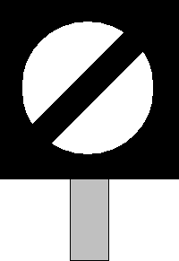
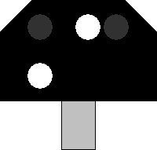

Signalbuch-Online
Signal Sh 1, Signal Ra 12 - Rangierfahrtsignal (DV 301)
(1)
Bedeutung
Signal Sh 1: Fahrverbot aufgehoben.
Signal Ra 12 (DV 301): Rangierfahrt erlaubt.
Signal Ra 12 (DV 301): Rangierfahrt erlaubt.
(2)
Beschreibung
Signal Sh 1 als Formsignal:
Ein nach rechts steigender schwarzer Streifen auf runder weißer Scheibe.
Signal Sh 1 Lichtsignal (DS 301), Signal Ra 12 (DV 301):
Zwei weiße Lichter nach rechts steigend.
Signal Sh 1 als Formsignal:
Ein nach rechts steigender schwarzer Streifen auf runder weißer Scheibe.

Signal Sh 1 Lichtsignal (DS 301), Signal Ra 12 (DV 301):
Zwei weiße Lichter nach rechts steigend.

(3)
In Verbindung mit Signal Hp 0
In Verbindung mit Signal Hp 0 zeigt das Signal an, dass das Haltegebot für Rangierfahrten aufgehoben ist.
(4)
Gleissperrensignal (DS 301)
Durch das Signal Sh 1 am Gleissperrensignal wird keine Zustimmung des Weichenwärters erteilt.
Das Signal Sh 1 am Gleissperrensignal zeigt an, dass die Gleissperre abgelegt ist.
Das Signal Sh 1 am Gleissperrensignal zeigt an, dass die Gleissperre abgelegt ist.
(5)
Mehrere Rangierfahrten vor dem Signal
Wenn mehrere Rangierfahrten vor dem Signal halten oder sich ihm nähern, gilt die Zustimmung nur für die erste Rangierfahrt.
(6)
Lichtsignal erlischt vorzeitig
Erlischt das Signal Sh 1 - Lichtsignal (DS 301) - bzw. das Signal Ra 12 (DV 301), bevor die Spitze der Rangierfahrt daran vorbei gefahren ist, so ist das erneute Aufleuchten des Signals abzuwarten.
(7)
Formsignal am Wartezeichen
Ist das Formsignal mit einem Wartezeichen verbunden, so ist stets eine besondere Zustimmung des Weichenwärters zur Vorbeifahrt abzuwarten.
(8)
Formsignal von hinten erkennbar
Der Eisenbahninfrastrukturunternehmer bestimmt, wo die Stellung des Formsignals auch von hinten erkennbar sein soll.
Es zeigt dann bei Tage eine weiße runde Scheibe auf schwarzem Grund, bei Dunkelheit ist die Scheibe rückstrahlend oder beleuchtet.
Es zeigt dann bei Tage eine weiße runde Scheibe auf schwarzem Grund, bei Dunkelheit ist die Scheibe rückstrahlend oder beleuchtet.
(9)
Originalbilder
Zum Öffnen der Galerie bitte Bild anklicken!